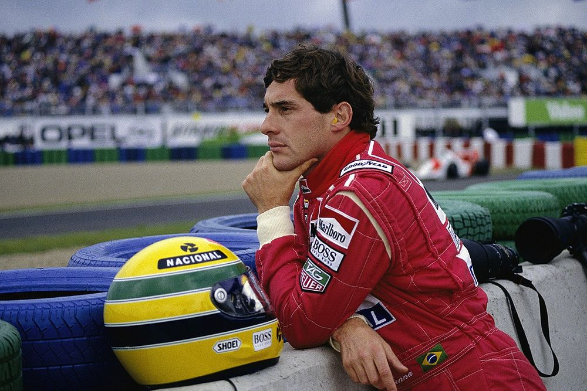

Senna conquistou 65 poles na F1 (recorde absoluto por muitos anos). Até pilotos como Schumacher e Hamilton sempre citaram Senna como referência em uma volta rápida.
Ele venceu seis vezes em Mônaco, um dos circuitos mais difíceis e técnicos da F1.
Dizem que Senna treinava de kart até de madrugada, mesmo na chuva, para aperfeiçoar sua sensibilidade no volante. Isso se refletia em seu desempenho impressionante em corridas molhadas.
Até hoje, pilotos atuais, como Lewis Hamilton, Fernando Alonso e Sebastian Vettel, citam Senna como inspiração. Muitos deles cresceram assistindo às suas corridas e sonhavam em ser como ele.
